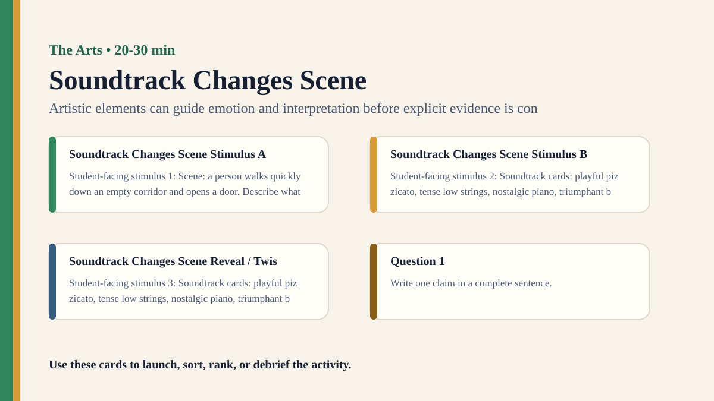

Premium draft resource
Soundtrack Changes Scene Classroom Run Kit
Students pair the same silent scene with different soundtracks and analyze how music changes interpretation.
Back to Soundtrack Changes Scene
One-Minute Teacher Brief
Students pair the same silent scene with different soundtracks and analyze how music changes interpretation.
Big idea: Artistic elements can guide emotion and interpretation before explicit evidence is considered.
Student Prompt
Inspect Soundtrack Changes Scene Stimulus A. Record one first claim, the evidence you used, your confidence, and what would make you revise.
Concrete Stimulus Packet
Stimulus
Soundtrack Changes Scene Stimulus A
Student-facing stimulus 1: Scene: a person walks quickly down an empty corridor and opens a door. Describe what you see or hear first, then add title/context and revise the interpretation.
Students inspect this exact card first and commit to a claim before hearing anyone else.Stimulus
Soundtrack Changes Scene Stimulus B
Student-facing stimulus 2: Soundtrack cards: playful pizzicato, tense low strings, nostalgic piano, triumphant brass. Describe what you see or hear first, then add title/context and revise the interpretation.
Use this for comparison, a second round, or a partner challenge.Stimulus
Soundtrack Changes Scene Reveal / Twist
Student-facing stimulus 3: Soundtrack cards: playful pizzicato, tense low strings, nostalgic piano, triumphant brass. Describe what you see or hear first, then add title/context and revise the interpretation.
Teacher reveal: connect the changed response to the big idea — Artistic elements can guide emotion and interpretation before explicit evidence is considered.Actual Lesson Questions
| # | Question for students | Teacher key / cue |
|---|---|---|
| 1 | After inspecting Soundtrack Changes Scene Stimulus A, what is your first knowledge claim? | Teacher cue: look for a clear claim, not just a description. |
| 2 | Which exact detail from Soundtrack Changes Scene Stimulus A did you use as evidence? | Teacher cue: students should name visible words, data, source features, method features, or contextual clues. |
| 3 | What did you infer beyond the evidence? | Teacher cue: this is where assumptions, framing, models, or perspective usually appear. |
| 4 | How confident are you: 50%, 60%, 70%, 80%, 90%, or 100%? | Teacher cue: confidence is data for the debrief, not a grade. |
| 5 | What missing information would most improve the knowledge claim? | Teacher cue: push for method, source, context, comparison, or definitions. |
| 6 | How does emotion shape interpretation in the arts? | Teacher cue: students should move from the classroom example to a general TOK issue. |
Student Task
Use the stimulus cards to complete the observation/inference/evidence/confidence grid, then answer one TOK knowledge question connected to The Arts.
Teacher Key / Reveal
The key move is not the “right answer”; it is the moment students see how artistic elements can guide emotion and interpretation before explicit evidence is considered.
- Strong response: separates observation from inference.
- Strong response: names a method, source, model, language choice, context, or perspective.
- Strong response: revises confidence when new evidence or a new criterion appears.
- Weak response: gives only opinion or says “it depends” without criteria.
Classroom materials
Printable Pack and Cards
Open the classroom resource pack for stimulus cards, CSV card deck, and the activity visual prompt.
Visual Prompt

Setup Checklist
- Use a simple silent scene with ambiguous emotion or intention.
- If audio playback is awkward, use written soundtrack cards instead of actual music.
Ready-to-Use Examples
- Scene: a person walks quickly down an empty corridor and opens a door.
- Soundtrack cards: playful pizzicato, tense low strings, nostalgic piano, triumphant brass.
Run Resources
- Scene interpretation chart: soundtrack, mood, story, evidence, confidence.
- Music feature cards: tempo, pitch, volume, rhythm, harmony, cultural association.
Teacher Language
- The visual evidence stayed constant; the emotional frame changed.
- What did the music make you expect before anything happened?
Sample Student Output
- With tense music, the door felt dangerous; with playful music, it felt comic.
- The soundtrack changed my prediction more than the image did.
Procedure
- Show the silent scene and ask students to infer mood and story.
- Replay or describe the same scene with different soundtrack styles.
- Students record how each soundtrack changes character, conflict, or expectation.
- Groups identify which evidence came from the image and which came from sound.
- Debrief emotion as a route to artistic knowledge.
Debrief Questions
- Knowledge question: How does emotion shape interpretation in the arts?
- Can music make viewers know something that is not visually shown?
- Where is meaning located: in the work, the audience, or the combination?
Adaptations
- Support: use two contrasting soundtrack cards.
- Challenge: ask students to identify which musical feature caused the meaning shift.
Extension Tasks
- Students storyboard the same scene for two genres and identify evidence for each reading.
- Connect to film, advertising, and political campaign videos.